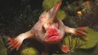
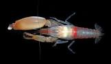
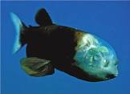
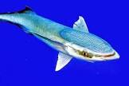

الاسماك هي كائنات بحريه جميله و لها اهميه كبيره في الحياه فمثلا انها تجزب السياحه مما ادى الى زياده الدخل القومي ان الاسماك لها انواع كثيره المعروفه و الغير معروفه فنحن نعرف القروش و الدلافين و الاسماك الاصغيره و الكبيره لكن لا احد يعرف الاسماك النادره التي تعيش في قاع البحار فهيا بنا نتعرف على انواع غريبه من الاسماك و لكن انها ستسير الجدل هيا بنا نتعرف على احلى اسماك
تعيش في بقعتان فى الشعاب المرجانيه قباله ساحل تسماينا في استراليا سمكه الي الحمراء تاكل القشريات الصغيره و الديدان و الرخويات فالا يزيد طولها عن 10سنتيمترات تتميز سمكه اليد الحمراء بعده الوان مثل الاحمر و البني و الوردي سمكه اليد الحمراء تفضل المشي على ايديها الكبيره بدلا من السباحه
يمتلك الجمبري المسدس القدره على استرجاع مخلبه لو فقده يشتهر جمبري المسدس بصوت القرع الزي يصنعه يمتلك هزا الجمري لديه مخلبين احداهم كبيره و الاخر صغير لا يعتدى طول الجمبري المسدس عن 5سم و يعيش هزا الجمبري حول الشعاب المرجانيه الاستوائيه يمتلك هزا الجمبري قوه كسر الزجاج
هى سمكه تمتلك راس شفاف و زعانف كبيره تساعد على الاستقرار دون حركه و لديها ايضا عيون خضروتان كبيرتان حيث ترى بها الاتجاهات لصيد الفرائس تسمى هزه السمكه بالسمكه زات الراس الشفاف او سمكه عيون البرميل تعيش هزه السمكه في اعماق هائله تتراوح بين 1800 الى 2600 قدم تحت سطح مياه المحيط الهادي بين اليابان و مضيق برنيغ و باخا كليفورنيا يصل طول سمكه عيون البرميل 75سم تستطيع هزه السمكه رؤيه جمجمتها عن طريق راسها الشفافه لقبت بسمكه عيون البرميل لانها تمتلك عدسه مفلطحه تشبه الصحن
هي سمكه تسمى بعده اسماء مثل :سمكه اللزاق و سمكه المصاص و قمله القرش و على راسها مصاصات تساعدها على الالتصاق بالحيوانات البحريه و تعيش في البحار الدافئة و يصل طول السمكه البالغه الى150سم وتاكل فتات الطعام الزي يسقط من سمكه القرش و يتكاثر عن طريق اطلاق البيض العائم و يطفو على المياه المفتوحه حتى يفقص الى يرقات ريمورا و تحتوي افواهها على العديد من الاسنان المدببه و تتمتع بقشور دائريه على جسمها و تكون زعانفها الظهريه و الشرجيه الناعمه متماثله في الشكل و الحجم
